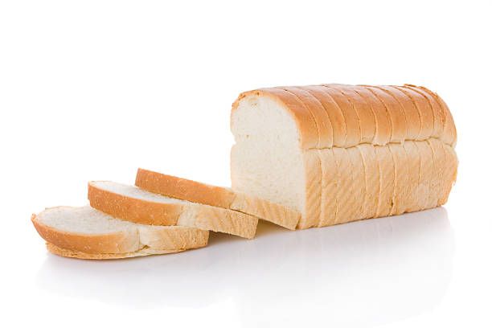

Homepage
White bread

Description:
The best white bread you'll ever have! Delicious warm with butter!
Ingredients:
- 1 ¼ cups lukewarm milk
- 3 cups all-purpose flour
- 1 ½ tablespoons white sugar
- 1 ½ teaspoons salt
- 2 tablespoons butter
- 2 teaspoons active dry yeast
Steps
- Place ingredients in the pan of the bread machine in the order suggested by the manufacturer.
- Select Basic or White Bread setting, and press Start. When done, place on wire rack for at least 10 minutes before slicing.